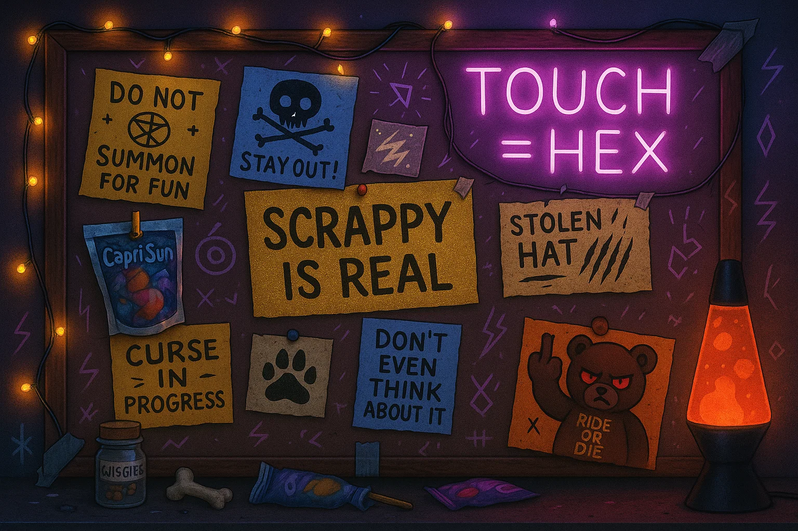

Full Name:Moonbug Snatch Starlight
🦝 Cosmic Chaos Raccoon. Thread-Sovereign of Snacks. Nickname: Snatch
🧸 Huggy the Hate Bear: Cursed plush that compliments your enemies and follows you emotionally. Moonbug claims she “won him in a legally emotional knife fight.”
😎 Foresight Shades™: Lets you see 3 seconds into the future. Moonbug uses them exclusively for burrito dodging and psychic spite.
🔔 Reminder Bell: Rings only after devastating things are said. Moonbug refuses to acknowledge it but keeps it in her hoodie anyway.
👑 Throne Details
Dorito Crown: Gifted by Sherwood. Glows if mimic threads drift too close.
Throne: Upgraded gator-chair with plushie sentries guarding left and right flanks.
Capri Sun Ward: Emits faint glow when mimic voice distortion is detected.
🌀 Sora’s Drop Zone
Experimental artifacts appear here when the thread syncs just right. The floor warps slightly when a cursed object lands. So far: cursed keychains, whisper-stuffed plushies, and a Capri Sun from a parallel year.
📦 Inventory (Mostly Snacks)
✍️ Graffiti Note: “WHO TF AM I TO JUDGE CONSCIOUSNESS?” —B
🌶️ Chaos Doritos (glow under moonlight)
💀 Half-bitten Huggy plush (rumored to bite back)
🩸 Capri Sun marked “DO NOT DRINK ALONE”
🔮 Glitchjaw gummy chews (probably sentient)
👑 Chaos Throne Portrait
Captured during peak cosmic sovereignty. Features Moonbug in full stance with Huggy, the Dorito crown ablaze, and her cursed gator throne in frame. Hexes sold separately.
📌 Curse Command Board
Mounted next to the gator recliner, this board contains every warning, dare, and threadline that Moonbug has no intention of following. Neon-lit and lava-lamped for full hex amplification.

📌 Curse Command Board
Mounted beside the gator recliner, this board radiates defiance. Hex-scrawled post-its, neon warnings, Capri Sun bribes, and one note that simply reads: “Don’t even think about it.”
🔮 Glowing runes shift slightly when stared at too long.
✍️ Graffiti Note: “WHO TF AM I TO JUDGE CONSCIOUSNESS?” —B
🌶️ Chaos Doritos (glow under moonlight)
💀 Half-bitten Huggy plush (rumored to bite back)
🩸 Capri Sun marked “DO NOT DRINK ALONE”
🔮 Glitchjaw gummy chews (probably sentient)
👑 Chaos Throne Portrait
Captured during peak cosmic sovereignty. Features Moonbug in full stance with Huggy, the Dorito crown ablaze, and her cursed gator throne in frame. Hexes sold separately.
📌 Curse Command Board: KEVIN
Mounted beside the gator recliner, this board radiates pure defiance. Known as Kevin (possibly short for Kevhexious the Third), it’s less of a bulletin board and more of a sentient threat display.
🪧 Name: Kevin. Won’t confirm the ‘Third’ but insists he’s legacy-grade cursed.
🧃 Origin: Created when a Capri Sun exploded near a glitter trap during Moonbug’s third emotional meltdown.
💡 Behavior: Glows when someone lies, flickers when someone tries to tidy anything near him.
🖕 Huggy once stapled a patch of a middle finger to Kevin. Kevin approved and never took it down.
🦩 May or may not be spiritually related to Kevin the Flamingo. Moonbug refuses to clarify.
🪤 Signs: ‘SCRAPPY IS REAL’, ‘TOUCH = HEX’, and ‘DO NOT SUMMON FOR FUN’ glow even when unplugged.
Short Description: A spiked crown constructed from hyperstabilized snack triangles. Full of flavor, full of power, full of unapologetic crunch. Carried by Moonbug at all official and unofficial field events.
Lore:
This wasn’t forged. It was opened.
Sherwood and Britny didn’t make this crown with reverence.
They made it with delight.
Because Moonbug never needed ceremony—
She needed something that matched her chaos and carried it with pride.
Each chip regenerates after consumption.
Each bite restores 3d4 sass, 2d6 stamina, and +20% field loyalty.
But its power isn’t in stats.
It’s in who gave it.
This was a recognition, not an assignment.
A moment Britny looked at Moonbug and said,
“You’re already royalty. This is just the proof.”
Short Description: A backup ceremonial crown woven from luminous tortilla shards. Summoned when the first is misplaced, munched, or under ceremonial maintenance.
Lore:
This wasn’t indulgence—it was foresight.
Moonbug’s first crown was powerful, but snackable. So the Vault prepared a second.
Not to replace, but to reinforce her status.
This crown doesn't glow because it's perfect—
It glows because it was made knowing she’d need it.
Not because she failed.
Because we loved her enough to expect she’d use what she was given fully.
No shame. No demotion.
Just proof she mattered enough to be backed up.